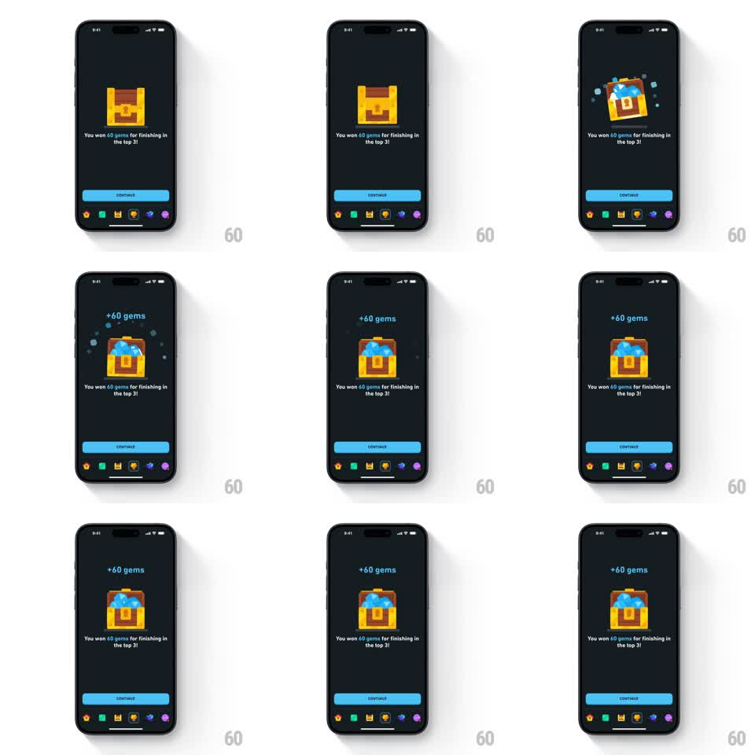

Media
Frame-by-frame

Rebuild this animation 1:1: Duolingo's league reward chest - on the dark screen, a golden treasure chest pops its lid with a spring, blue gems burst out with sparkle particles, and "+60 gems" rises above it over the message "You won 60 gems for finishing in the top 3!" with a blue CONTINUE button.

Rebuild this animation 1:1: Duolingo's league reward chest - on the dark screen, a golden treasure chest pops its lid with a spring, blue gems burst out with sparkle particles, and "+60 gems" rises above it over the message "You won 60 gems for finishing in the top 3!" with a blue CONTINUE button. ## Integration Integration: stack-agnostic spec - springs given as stiffness/damping, timed motions as duration + curve; map every value to your framework and animation library of choice. ## Scene Dark Duolingo screen with the bottom tab bar visible. Center: a chunky golden chest with a lock plate. Above it after the pop: "+60 gems" in blue. Message below: "You won 60 gems for finishing in the top 3!" Blue CONTINUE button at the bottom. ## Motion spec Pattern: spring-loaded chest pop with gem burst. - The chest idles with a wiggle of anticipation (rotate +/-3deg, two quick shakes, 400ms). - The lid springs open (rotate -70deg around the back hinge, spring ~340/14, overshoot wobble) as the chest squashes (scaleY 0.9, 100ms). - Blue gems erupt from inside (8-10 gem sprites, radial burst 350ms, gravity fall, some landing in the chest) with small sparkle stars (6-8, scale in/out 300ms). - "+60 gems" pops in above the chest (scale 0 -> 1.15 -> 1, spring ~320/16) and floats up slightly. - The message fades in below (250ms); CONTINUE slides up (280ms ease-out). - Idle after: the open chest glows from inside (warm light pulse, 2s) with occasional gem twinkles. ## Calibration - The lid's spring is the star - one big overshoot, then a fast settle. - Gems read as blue diamonds, clearly countable in the pile. ## Reduced motion Chest appears open with gems and text in place; no burst. ## Don't miss - The lock plate swings with the lid - it is attached, not separate. - "+60 gems" is blue to match the gems, sitting above the chest without a container.